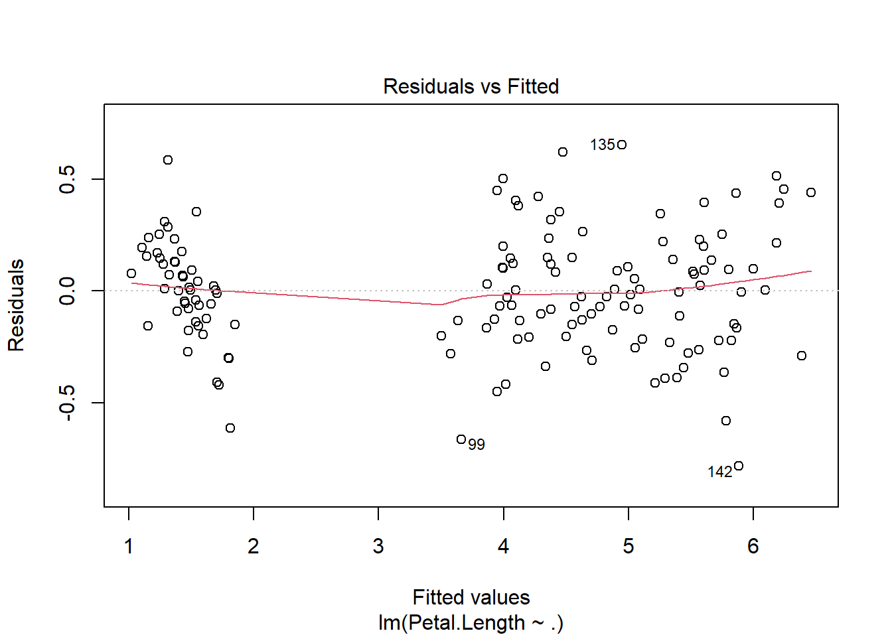
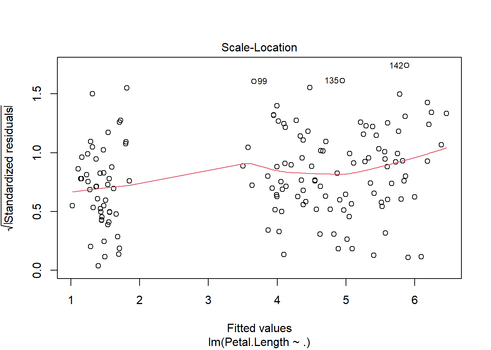
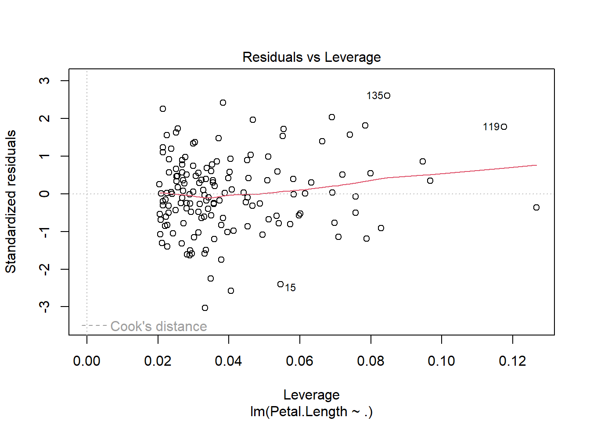
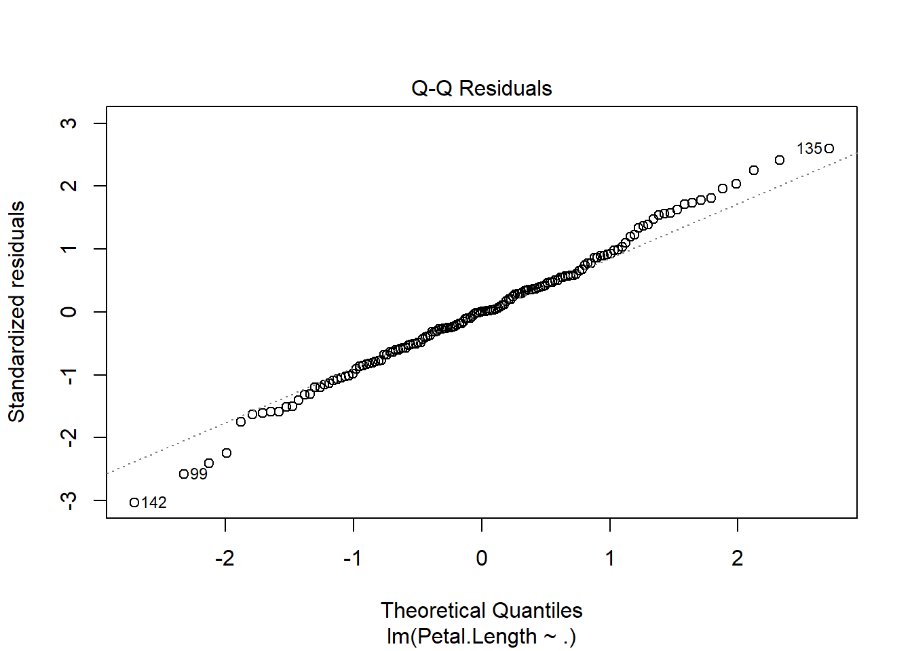
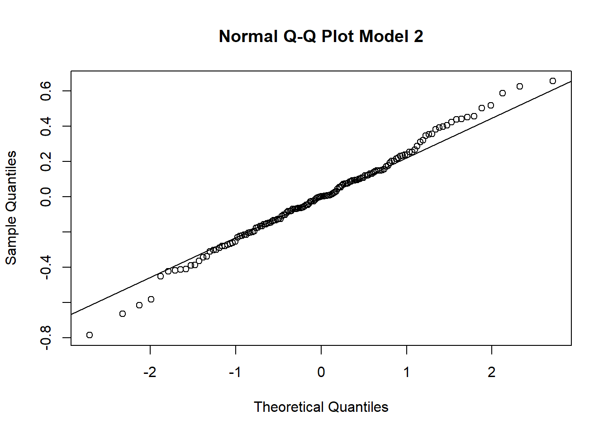
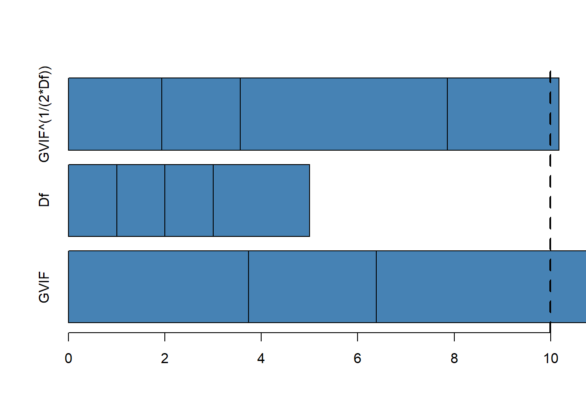
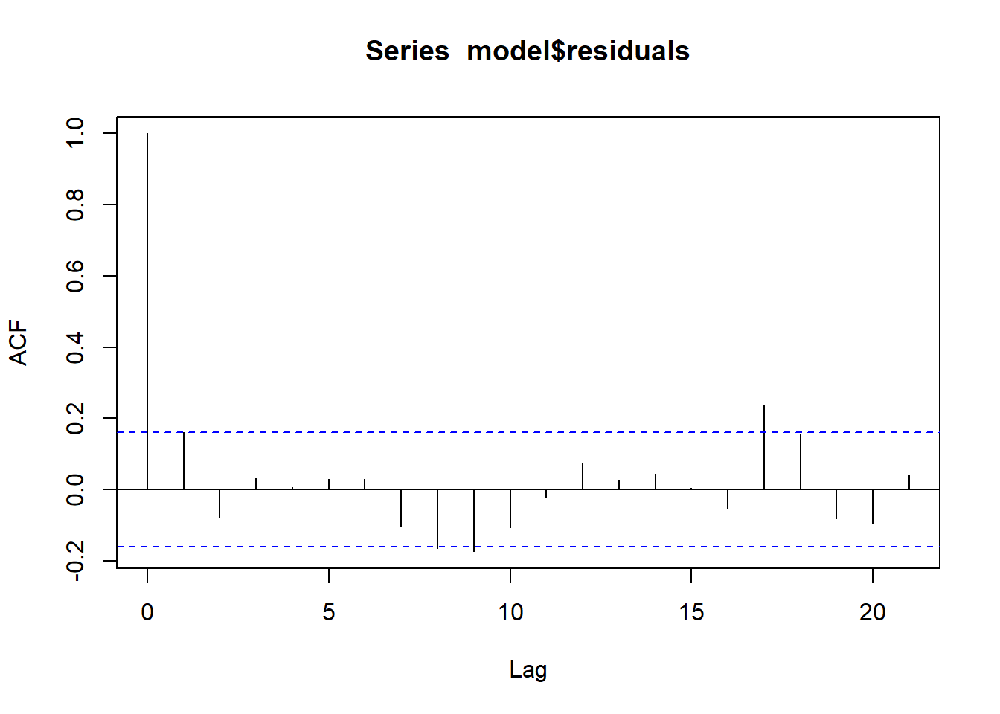

install.packages(c('car', 'olsrr', 'lmtest'), repos = "http://cran.us.r-project.org")Uji Asumsi Regresi Linear Sederhana
Simple Linear Regression
Offline di Departemen Matematika
Uji Asumsi pada model linear
Dalam analisis regresi linear sederhana, kita berhadapan dengan model yang merepresentasikan hubungan linier antara satu variabel dependen dan satu atau lebih variabel independen. Namun, sebelum model ini bisa digunakan untuk prediksi yang akurat, ada serangkaian asumsi yang harus diuji. Jika asumsi-asumsi ini tidak terpenuhi, maka model kita tidak lagi valid, dan hasil estimasi bisa menjadi bias atau tidak efisien.
Model Linear: Pendahuluan
Secara matematis, model regresi linear sederhana dinyatakan sebagai:
\[Y = \beta_0 + \beta_1 X_1 + \beta_2 X_2 + \dots + \beta_n X_n + \epsilon\]
Di sini, ϵ adalah residual atau galat, yang mencerminkan perbedaan antara nilai yang diamati dengan nilai yang diprediksi oleh model. Semua uji asumsi yang dilakukan bertujuan untuk memeriksa sifat residual ini, karena galat mencerminkan kualitas model dalam menjelaskan variabilitas Y.
Mengapa Uji Asumsi Diperlukan?
Asumsi dalam regresi linier adalah dasar matematis yang memungkinkan kita menggunakan metode estimasi Ordinary Least Squares (OLS) dengan properti BLUE (Best Linear Unbiased Estimator). Jika asumsi-asumsi ini terpenuhi, maka estimasi parameter β yang kita hitung adalah yang terbaik, tidak bias, dan memiliki varians minimum. Namun, jika asumsi gagal dipenuhi, properti-properti ini tidak lagi berlaku, yang menyebabkan prediksi dan inferensi statistik menjadi tidak valid.
Library yang diperlukan
| Library | Fungsi Utama |
|---|---|
car |
Analisis regresi, diagnostik model (misalnya VIF, ANOVA) |
lmtest |
Uji diagnostik regresi (misalnya Breusch-Pagan Test, Durbin-Watson Test) |
olsrr |
Alat analisis regresi OLS (misalnya stepwise regression, residual plots) |
lalu, kita jalankan library nya
library(car)Loading required package: carDatalibrary(lmtest)Loading required package: zoo
Attaching package: 'zoo'The following objects are masked from 'package:base':
as.Date, as.Date.numericlibrary(olsrr)
Attaching package: 'olsrr'The following object is masked from 'package:datasets':
riversMembuat model dan memodelkan data tersebut
data('iris')model = lm(Petal.Length~., data=iris)
summary(model)
Call:
lm(formula = Petal.Length ~ ., data = iris)
Residuals:
Min 1Q Median 3Q Max
-0.78396 -0.15708 0.00193 0.14730 0.65418
Coefficients:
Estimate Std. Error t value Pr(>|t|)
(Intercept) -1.11099 0.26987 -4.117 6.45e-05 ***
Sepal.Length 0.60801 0.05024 12.101 < 2e-16 ***
Sepal.Width -0.18052 0.08036 -2.246 0.0262 *
Petal.Width 0.60222 0.12144 4.959 1.97e-06 ***
Speciesversicolor 1.46337 0.17345 8.437 3.14e-14 ***
Speciesvirginica 1.97422 0.24480 8.065 2.60e-13 ***
---
Signif. codes: 0 '***' 0.001 '**' 0.01 '*' 0.05 '.' 0.1 ' ' 1
Residual standard error: 0.2627 on 144 degrees of freedom
Multiple R-squared: 0.9786, Adjusted R-squared: 0.9778
F-statistic: 1317 on 5 and 144 DF, p-value: < 2.2e-161. Homoskedastisitas: Residual Konstan
Asumsi pertama adalah homoskedastisitas, yang mengharuskan bahwa varians dari galat \(\epsilon\) adalah konstan untuk semua nilai \(X\). Mengapa ini penting? Jika varians residual berubah-ubah (heteroskedastisitas), maka model kita akan memberi bobot yang berbeda pada observasi yang berbeda, yang mengakibatkan estimasi parameter menjadi tidak efisien.
Heteroskedastisitas terjadi ketika varians dari galat (residual) tidak konstan sepanjang rentang nilai variabel independen (\(X\)). Secara visual, heteroskedastisitas sering muncul sebagai pola “fanning out” atau “fanning in” pada plot residual terhadap nilai yang diprediksi. Artinya, seiring bertambahnya nilai prediksi, varians residual semakin besar atau semakin kecil.
Visualisasi Heteroskedastisitas:
Plot Residual vs. Fitted Values: Pada plot ini, jika asumsi homoskedastisitas terpenuhi, kita akan melihat pola residual yang acak, tersebar secara merata di sekitar garis nol tanpa pola khusus. Namun, jika ada heteroskedastisitas, residual akan menyebar secara sistematis, misalnya dengan bentuk kerucut (menyempit atau melebar), yang menunjukkan bahwa varians berubah-ubah.
Contoh visual heteroskedastisitas yang sering terlihat:
- Fanning out: Varians residual meningkat dengan bertambahnya nilai prediksi, menunjukkan varians residual yang semakin besar seiring meningkatnya nilai \(X\).
- Fanning in: Varians residual menurun seiring bertambahnya nilai prediksi, artinya varians residual semakin kecil pada nilai \(X\) yang lebih besar.
Residual Spread: Secara umum, heteroskedastisitas bisa dikenali jika nilai-nilai residual yang kecil berkumpul di satu sisi dan nilai-nilai residual yang besar di sisi lain, tanpa distribusi yang acak.
Secara Hitungan: Untuk mendeteksi heteroskedastisitas secara numerik, kita dapat menggunakan beberapa metode uji statistik seperti Breusch-Pagan Test, Non-Constant Variance Test, dan Goldfeld-Quandt Test. Pengujian ini bertujuan untuk memeriksa apakah varians residual bervariasi dengan cara yang sistematis terkait dengan variabel independen atau nilai prediksi.
Cara Uji:
Untuk memvisualisasikan homoskedastisitas, kita dapat memplot residual versus fitted values. Secara ideal, tidak boleh ada pola tertentu pada plot ini.
R Code:
par(mfrow=c(1, 1))
plot(model)



plot(model, 3)Selain itu, uji statistik seperti Breusch-Pagan (bptest()), Non-Constant Variance Test (ncvTest()), dan Goldfeld-Quandt Test (gqtest()) digunakan untuk menguji hipotesis nol bahwa residual bersifat homoskedastis:
H0: \(\sigma^2 = \text{konstan}\) = Residualnya homoskedastisitas
Jika \(p-value\) dari tes ini signifikan, kita menolak hipotesis nol dan menyimpulkan bahwa terdapat heteroskedastisitas dalam model.
Uji Statistik untuk Homoskedastisitas
1. Breusch-Pagan Test (bptest())
Uji ini bertujuan untuk menguji apakah varians dari residual bergantung pada variabel independen. Hipotesis nol (H0) dari uji ini adalah bahwa residual homoskedastis (varians konstan).
Langkah perhitungan:
Breusch-Pagan test menghitung statistik λ yang mengikuti distribusi chi-squared:
\[\lambda = \frac{SSR}{2}\]
Di sini, SSR adalah sum of squared residuals dari regresi tambahan di mana residual dikuadratkan sebagai variabel dependen, dan variabel independen tetap sama seperti dalam model utama.
Hipotesis nol: H0: \(σ^2\)=konstan. Jika \(p\)-value dari tes ini signifikan, kita menolak hipotesis nol dan menyimpulkan bahwa ada heteroskedastisitas.
Interpretasi: Jika \(p\)-value < 0.05, kita menolak \(H_0\), yang berarti ada heteroskedastisitas (varians tidak konstan). Jika \(p\)-value > 0.05, kita tidak memiliki cukup bukti untuk menolak \(H_0\), artinya residual bisa dianggap homoskedastis.
2. Non-Constant Variance Test (ncvTest())
Uji ini mirip dengan Breusch-Pagan Test, tetapi menggunakan pendekatan yang sedikit berbeda untuk mendeteksi ketidakstabilan varians residual.
Interpretasi:
Hipotesis nol dari uji ini juga menyatakan bahwa varians residual adalah konstan ( \(H_0\) : \(\sigma^2\) = \(\text{konstan}\) ).
Jika hasil uji menunjukkan \(p\)-value yang kecil (biasanya < 0.05), kita menolak hipotesis nol dan menyimpulkan bahwa terdapat heteroskedastisitas.
3. Goldfeld-Quandt Test (gqtest())
Uji ini khusus digunakan untuk menguji heteroskedastisitas di mana ada dugaan bahwa varians residual berubah seiring bertambahnya variabel independen. Tes ini cocok untuk situasi di mana kita menduga heteroskedastisitas terjadi di bagian tertentu dari data (misalnya, varians residual lebih besar pada nilai \(X\) yang lebih tinggi).
Cara kerja:
Data dibagi menjadi dua kelompok berdasarkan nilai variabel independen atau nilai prediksi, dan uji statistik dilakukan untuk melihat apakah varians dari dua kelompok ini berbeda secara signifikan.
Hipotesis nol menyatakan bahwa kedua kelompok memiliki varians yang sama, atau homoskedastis.
Interpretasi:
Jika \(p\)-value dari tes ini signifikan, kita menolak \(H_0\), yang berarti ada heteroskedastisitas.
Jika \(p\)-value tidak signifikan, kita tidak dapat menolak hipotesis nol, yang menunjukkan bahwa residual mungkin homoskedastis.
bptest(model)
studentized Breusch-Pagan test
data: model
BP = 5.6534, df = 5, p-value = 0.3414ncvTest(model)Non-constant Variance Score Test
Variance formula: ~ fitted.values
Chisquare = 5.42185, Df = 1, p = 0.019886gqtest(model)
Goldfeld-Quandt test
data: model
GQ = 1.9343, df1 = 69, df2 = 69, p-value = 0.003405
alternative hypothesis: variance increases from segment 1 to 22. Normalitas Residual
Asumsi selanjutnya adalah bahwa residual \(\epsilon\) terdistribusi normal, atau:
\[\epsilon \sim N(0, \sigma^2)\]
Ini penting karena normalitas residual memengaruhi pengujian hipotesis mengenai parameter \(\beta\). Banyak uji statistik dalam regresi linear, termasuk pengujian signifikansi koefisien dan perhitungan interval kepercayaan, mengasumsikan normalitas residual. Jika asumsi ini tidak terpenuhi, maka uji-tes \(t\) dan \(F\)-statistik bisa menjadi tidak valid.
Cara Uji:
Visualisasikan distribusi residual dengan plot Q-Q (Quantile-Quantile) dan lakukan uji formal seperti Shapiro-Wilk, Kolmogorov-Smirnov, atau OLS Test for Normality.
R Code:
plot(model, 2)
H0: Residual berdistribusi Normal
ols_test_normality(model$residuals)Warning in ks.test.default(y, "pnorm", mean(y), sd(y)): ties should not be
present for the one-sample Kolmogorov-Smirnov test-----------------------------------------------
Test Statistic pvalue
-----------------------------------------------
Shapiro-Wilk 0.9939 0.7800
Kolmogorov-Smirnov 0.0476 0.8857
Cramer-von Mises 29.1578 0.0000
Anderson-Darling 0.2691 0.6762
-----------------------------------------------ks.test(model$residuals, 'pnorm')Warning in ks.test.default(model$residuals, "pnorm"): ties should not be
present for the one-sample Kolmogorov-Smirnov test
Asymptotic one-sample Kolmogorov-Smirnov test
data: model$residuals
D = 0.30331, p-value = 2.067e-12
alternative hypothesis: two-sidedks.test(rstandard(model), 'pnorm')Warning in ks.test.default(rstandard(model), "pnorm"): ties should not be
present for the one-sample Kolmogorov-Smirnov test
Asymptotic one-sample Kolmogorov-Smirnov test
data: rstandard(model)
D = 0.045556, p-value = 0.9146
alternative hypothesis: two-sidedshapiro.test(model$residuals)
Shapiro-Wilk normality test
data: model$residuals
W = 0.99389, p-value = 0.78qqnorm(model$residuals, main='Normal Q-Q Plot Model 2')
qqline(model$residuals)
a. qqnorm() dan qqline()
qqnorm() digunakan untuk membuat Normal Q-Q Plot, yaitu grafik yang membandingkan distribusi residual model dengan distribusi normal teoretis. Plot ini berguna untuk melihat apakah residual dari model regresi mengikuti distribusi normal atau tidak, yang merupakan salah satu asumsi utama regresi linear sederhana.
- Pada Normal Q-Q Plot, titik-titik residual akan diplot terhadap kuantil dari distribusi normal. Jika residual berdistribusi normal, titik-titik tersebut akan mengikuti garis diagonal pada plot (garis y=x).
qqline() menambahkan garis referensi (garis diagonal) yang menunjukkan distribusi normal. Titik-titik yang mengikuti garis ini mengindikasikan bahwa residual mendekati distribusi normal.
Interpretasi:
Jika titik-titik residual mendekati garis diagonal, maka residual mendekati distribusi normal.
Jika titik-titik jauh dari garis diagonal, maka distribusi residual tidak normal, yang mungkin menyebabkan masalah dalam interpretasi model.
b. shapiro.test()
Shapiro-Wilk Test adalah uji statistik untuk memeriksa apakah residual berdistribusi normal. Hipotesis nol ( \(H_0\) ) dari tes ini adalah bahwa data mengikuti distribusi normal.
Interpretasi:
Jika \(p\)-value lebih besar dari 0.05, kita tidak menolak \(H_0\), yang berarti data residual dianggap normal.
Jika \(p\)-value kurang dari 0.05, kita menolak \(H_0\), yang menunjukkan bahwa residual tidak normal.
c. ks.test()
Kolmogorov-Smirnov Test (K-S Test) membandingkan distribusi residual dengan distribusi normal standar (atau distribusi lain). K-S Test mengukur kesesuaian distribusi data terhadap distribusi referensi.
Interpretasi:
Jika \(p\)-value lebih besar dari 0.05, kita tidak menolak hipotesis nol bahwa residual berasal dari distribusi normal.
Jika \(p\)-value kurang dari 0.05, kita menolak hipotesis nol, yang menunjukkan bahwa residual tidak berasal dari distribusi normal.
3. Multikolinearitas: Keterkaitan Antar Variabel Independen
Asumsi berikutnya berkaitan dengan variabel independen dalam model. Multikolinearitas terjadi ketika dua atau lebih variabel independen sangat berkorelasi. Hal ini bisa menyebabkan kesulitan dalam memperkirakan koefisien regresi karena sulit untuk memisahkan efek masing-masing variabel pada \(Y\).
Secara matematis, ketika ada multikolinearitas tinggi, matriks kovarians menjadi tidak stabil (determinannya mendekati nol), yang membuat varian estimasi parameter menjadi besar.
Cara Uji:
Indikator utama multikolinearitas adalah Variance Inflation Factor (VIF). Nilai VIF yang lebih dari 10 menunjukkan adanya multikolinearitas yang tinggi.
R Code:
ols_coll_diag(model)Tolerance and Variance Inflation Factor
---------------------------------------
Variables Tolerance VIF
1 Sepal.Length 0.26761548 3.736705
2 Sepal.Width 0.37762546 2.648127
3 Petal.Width 0.05406290 18.496973
4 Speciesversicolor 0.06882690 14.529202
5 Speciesvirginica 0.03455491 28.939448
Eigenvalue and Condition Index
------------------------------
Eigenvalue Condition Index intercept Sepal.Length Sepal.Width
1 4.573283882 1.000000 2.851136e-04 2.456302e-04 3.226855e-04
2 1.027637390 2.109571 4.446741e-05 6.249269e-06 2.759544e-05
3 0.378499796 3.476012 1.991536e-03 5.195376e-04 4.698843e-03
4 0.013059100 18.713605 6.100145e-02 4.579052e-03 4.991487e-02
5 0.003886901 34.301441 6.053648e-02 9.227193e-01 4.147418e-01
6 0.003632932 35.480149 8.761410e-01 7.193024e-02 5.302942e-01
Petal.Width Speciesversicolor Speciesvirginica
1 0.0006620528 0.0007856945 0.0005422018
2 0.0003428191 0.0233747728 0.0098967782
3 0.0081546496 0.0329154069 0.0081699639
4 0.5742389993 0.2460856442 0.3895153606
5 0.0054953262 0.2634551107 0.2258969957
6 0.4111061530 0.4333833708 0.3659786998vif_mod = vif(model)
barplot(vif_mod, horiz=TRUE,
col='steelblue', xlim=c(0, 10))
abline(v=10, lwd=3, lty=2)
a. Variance Inflation Factor (VIF)
VIF digunakan untuk mendeteksi multikolinearitas antar variabel independen dalam model regresi. Nilai VIF menunjukkan seberapa besar variabel independen dalam model berhubungan linear dengan variabel independen lainnya. Semakin besar nilai VIF, semakin tinggi tingkat multikolinearitas.
VIF = 1: Tidak ada korelasi antara variabel independen.
1 < VIF < 5: Korelasi antar variabel independen masih bisa diterima.
VIF > 10: Multikolinearitas tinggi, yang berarti variabel independen saling berkorelasi kuat, dan ini dapat mengganggu hasil estimasi.
Interpretasi:
- Jika ada variabel dengan VIF > 10, maka kemungkinan terjadi multikolinearitas yang tinggi. Ini bisa menyebabkan koefisien regresi menjadi tidak stabil dan sulit untuk diinterpretasikan.
4. Autokorelasi Residual
Autokorelasi berarti bahwa residual dari satu observasi berkorelasi dengan residual observasi lain, yang melanggar asumsi independensi residual. Dalam model regresi linier, kita mengasumsikan bahwa residual tidak memiliki pola urutan atau hubungan temporal.
Secara matematis, autokorelasi mengimplikasikan bahwa:
\[E(\epsilon_i\epsilon_j) \ne 0 \text{ untuk } i \ne j\]
Jika autokorelasi ada, prediksi bisa menjadi bias dan interval kepercayaan tidak lagi valid.
Cara Uji:
Kita bisa memvisualisasikan autokorelasi dengan plot Autocorrelation Function (ACF) dan mengujinya dengan Durbin-Watson Test atau Breusch-Godfrey Test.
R Code:
acf(model$residuals, type='correlation')
H0: Tidak ada autokorelasi pada lag 1
dwtest(model)
Durbin-Watson test
data: model
DW = 1.6772, p-value = 0.01521
alternative hypothesis: true autocorrelation is greater than 0H0: Tidak ada autokorelasi pada lag 3
bgtest(model, order=3)
Breusch-Godfrey test for serial correlation of order up to 3
data: model
LM test = 6.2442, df = 3, p-value = 0.1003H0: Tidak ada autokorelasi
Box.test(residuals(model), type='Ljung-Box')
Box-Ljung test
data: residuals(model)
X-squared = 3.9435, df = 1, p-value = 0.04705a. Autocorrelation Function (ACF)
acf() digunakan untuk memplot fungsi autokorelasi dari residual. Autokorelasi mengukur hubungan antara residual pada waktu tertentu dengan residual pada waktu sebelumnya. Dalam regresi, asumsi bahwa residual tidak berkorelasi secara serial harus terpenuhi.
Interpretasi:
Jika terdapat autokorelasi, artinya residual pada titik waktu tertentu memiliki korelasi dengan residual di waktu lainnya, yang melanggar asumsi independensi residual.
Pada plot ACF, jika garis autokorelasi jatuh di luar batas yang diharapkan (garis putus-putus pada plot), ini menunjukkan adanya autokorelasi.
b. Durbin-Watson Test (DW Test)
Uji Durbin-Watson digunakan untuk mendeteksi autokorelasi di residual pada lag 1 (residual saat \(t\) dikorelasikan dengan residual saat \(t-1\) ).
Hipotesis Nol (H0) dari uji ini adalah bahwa tidak ada autokorelasi pada residual.
Interpretasi:
Jika nilai DW mendekati 2, tidak ada autokorelasi.
Nilai DW mendekati 0 menunjukkan adanya autokorelasi positif.
Nilai DW mendekati 4 menunjukkan adanya autokorelasi negatif.
c. Breusch-Godfrey Test (BG Test)
Uji Breusch-Godfrey (juga dikenal sebagai LM Test) menguji autokorelasi residual pada lebih dari satu lag. Hipotesis nol ( \(H_0\) ) adalah bahwa tidak ada autokorelasi pada semua lag yang diuji.
Interpretasi:
Jika \(p\)-value dari BG test lebih besar dari 0.05, kita tidak menolak \(H_0\), yang berarti tidak ada autokorelasi pada lag yang diuji.
Jika \(p\) -value < 0.05, kita menolak \(H_0\), yang berarti ada autokorelasi pada beberapa lag.
5. Linearitas Hubungan Antara Variabel
Terakhir, asumsi linearitas mengharuskan bahwa hubungan antara variabel independen dan dependen adalah benar-benar linier. Jika ada hubungan non-linear, maka model linear tidak akan menangkap pola tersebut dengan baik.
Secara formal, asumsi ini bisa diuji dengan uji Ramsey RESET, yang menguji apakah model linier sudah ditentukan dengan benar.
H0: Variabel Independen dan Dependennya sudah didefinisikan dengan benar
R Code:
resettest(model)
RESET test
data: model
RESET = 7.5174, df1 = 2, df2 = 142, p-value = 0.0007885a. Ramsey RESET Test
Uji RESET (Regression Specification Error Test) digunakan untuk menguji apakah model regresi memiliki kesalahan spesifikasi, khususnya apakah model tidak memadai dalam menjelaskan hubungan linear antara variabel independen dan dependen.
Hipotesis nol (\(H_0\)): Model tidak mengalami kesalahan spesifikasi.
Hipotesis alternatif: Model mengalami kesalahan spesifikasi (misalnya, mungkin perlu ditambahkan polinomial atau interaksi variabel).
Interpretasi:
Jika \(p\)-value lebih kecil dari 0.05, kita menolak \(H_0\), yang berarti ada bukti kesalahan spesifikasi dalam model.
Jika \(p\)-value lebih besar dari 0.05, kita tidak menolak \(H_0\), yang berarti model spesifikasinya sudah benar.
Bagaimana Uji Asumsi Membantu Model Linear?
Semua uji asumsi ini penting karena model regresi hanya akan memberikan estimasi yang BLUE jika asumsi-asumsi tersebut terpenuhi. Ketika asumsi tidak terpenuhi, kita harus mempertimbangkan transformasi data, penyesuaian model, atau penggunaan metode estimasi lain seperti Weighted Least Squares (WLS) atau Generalized Least Squares (GLS). Uji asumsi memberikan landasan yang kuat bagi validitas prediksi dan inferensi statistik yang dilakukan dengan model regresi linear sederhana.